Before: compiled PR #41, 2b62f15f3f31d444f23a4750d9f124043be5ce92. After: this integration of the approved ZIP patch, with one buffering/cancellation correction. Production has not been promoted. These are actual Chrome compiled-build captures using identical read-only public GET/CV fixtures.
The silent cut is 11.60s → 0.20s, retaining the video layer. It is not seamless footage; the small pose cut and supplied facial-animation limitations remain. Hear starts at zero and plays the complete approved voice once, through “download my CV”, then returns to muted looping. The website uses the approved transparent WebMs; these MP4s are flattened browser review recordings only.
Both resolutions passed ten real muted repeats, with no still flashes, layer overlaps or gaps in render samples, a maximum of one pending video-frame callback, and zero after navigation cleanup. Recordings cover the final audited cut, explicit full speech and muted return. They are screenshot-sampled browser recordings exported at 25fps; sound is approved source audio muxed at measured speech origin, not system/microphone capture or an independent lip-sync audition.
Download recording · Ten-cycle measurements
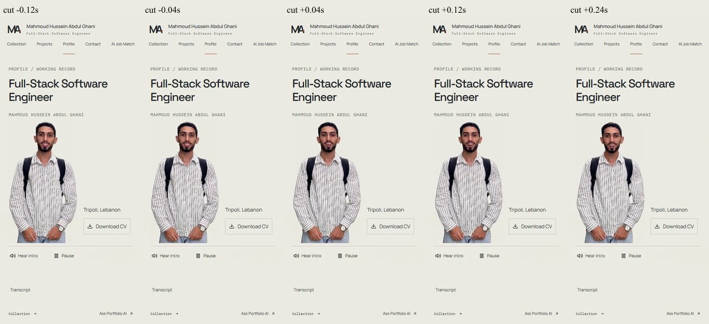
Download recording · Ten-cycle measurements
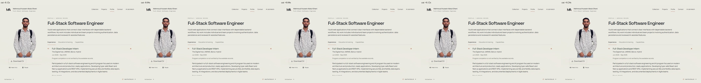
Before left / integrated refinement right, after the explicit Hear action. At 320/390×640, the initial heading and full figure cannot all fit above the fold; normal main scrolling or Hear brings the complete figure/captions into view. All initial captures are retained below.
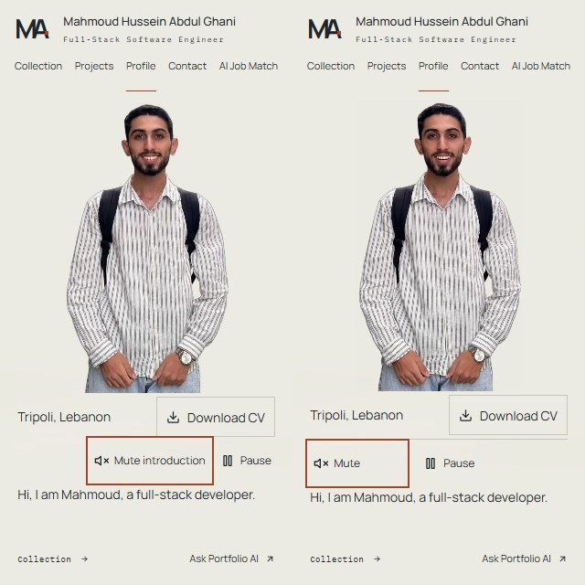
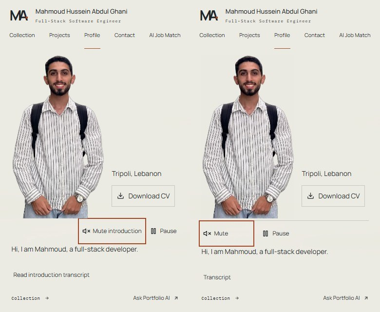
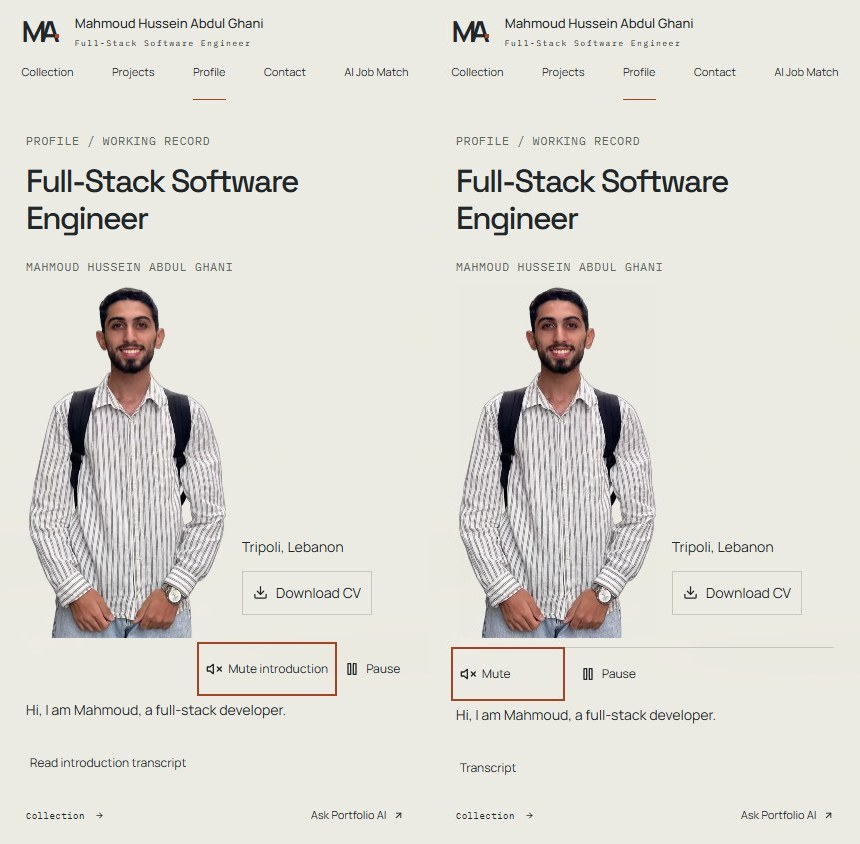
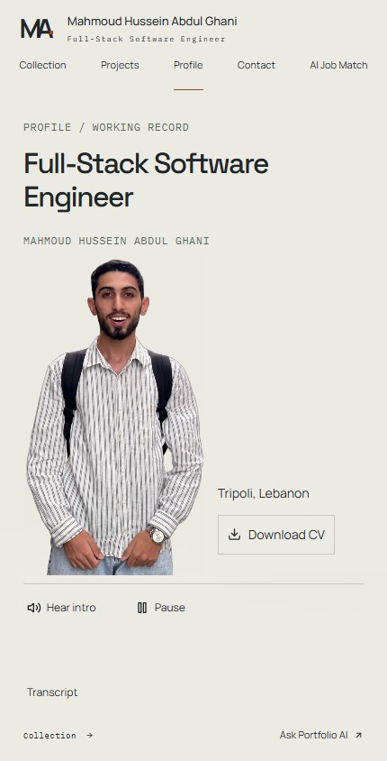
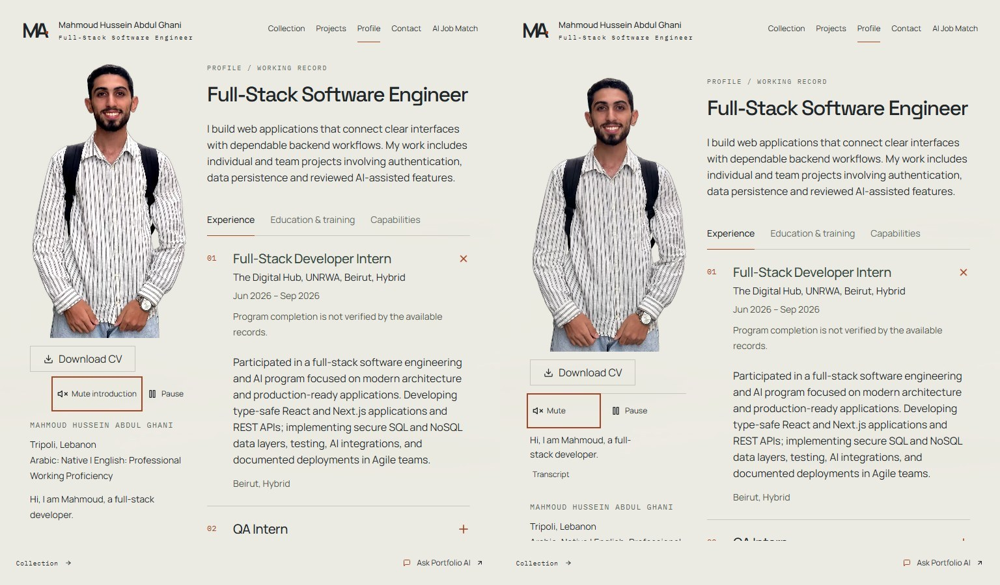
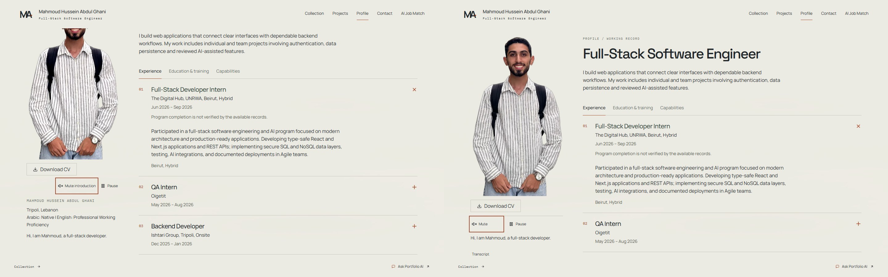
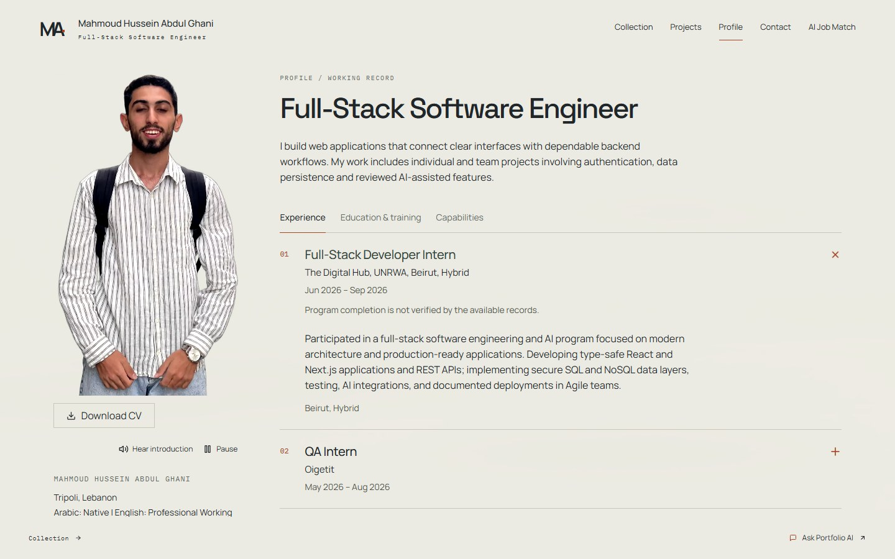
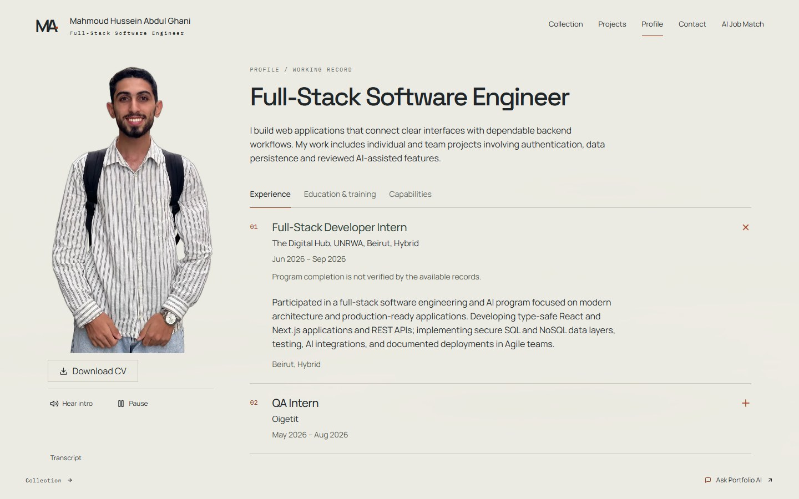
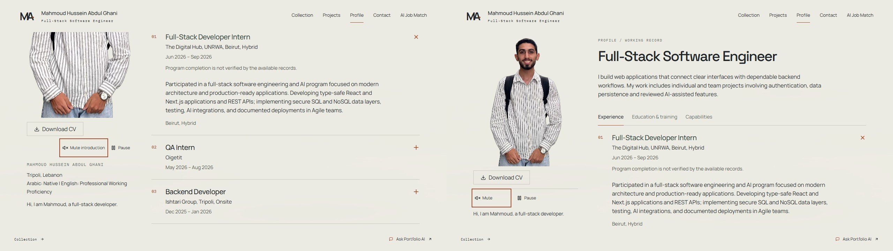
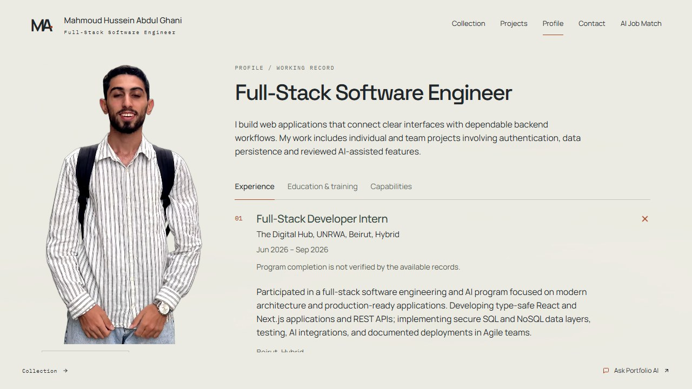
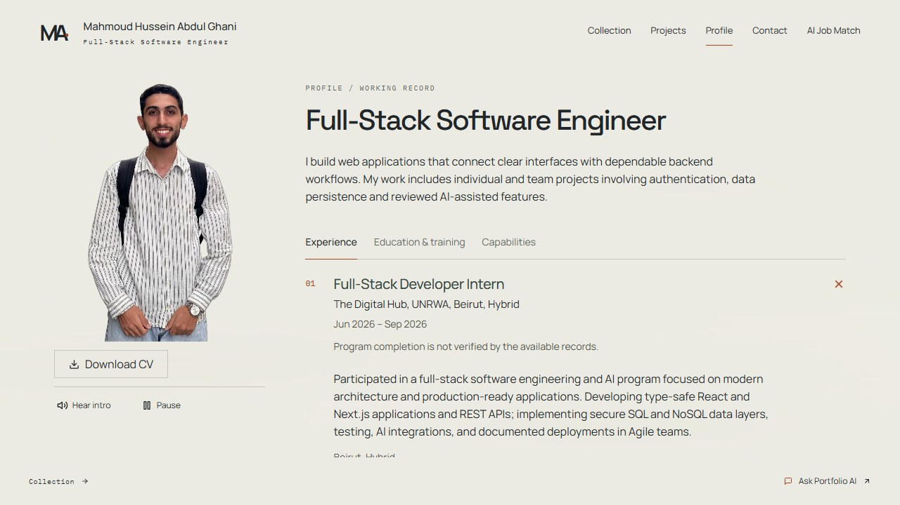
Consecutive 40ms source frames, not generated mockups or interpolated motion. These samples do not certify anatomically perfect mouth/teeth animation. The source cut remains visible.
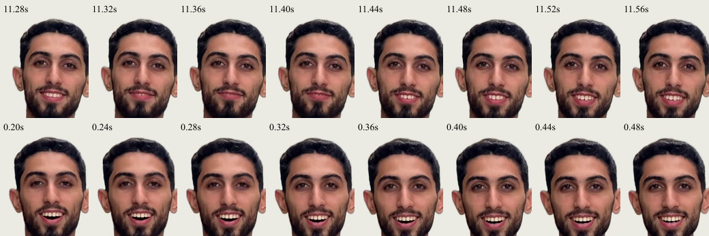
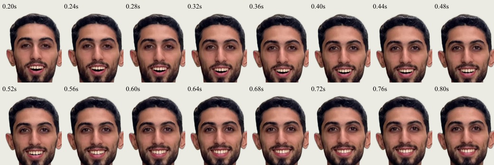
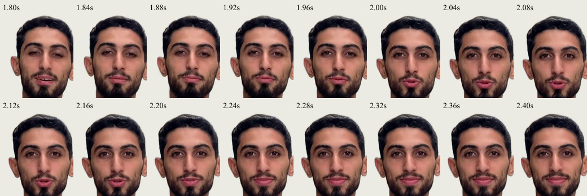
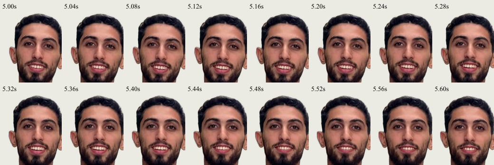
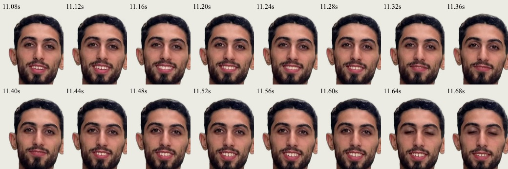
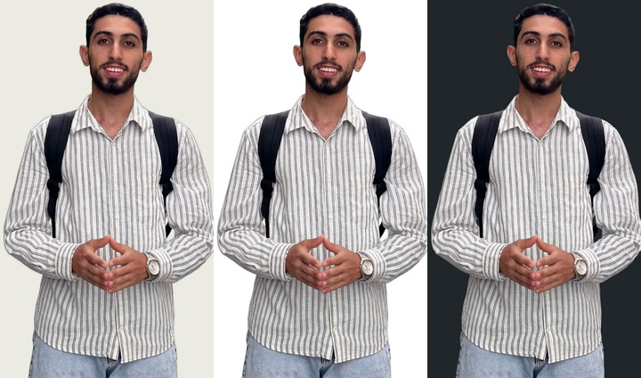
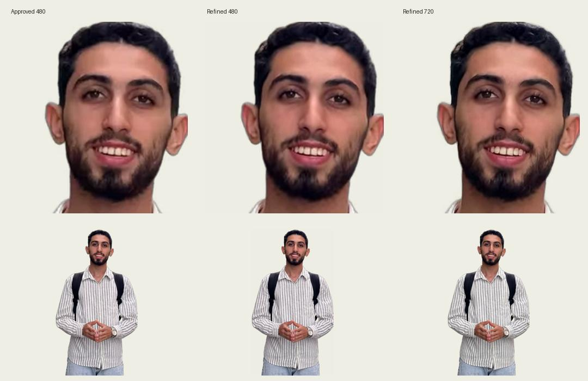
The videos are larger: 2.70MB and 5.05MB, not a bandwidth improvement. Media-only CDP throttling after cached UI/still/fonts measured first playback near 1.7s/2.2s at 1.5Mbps, with desktop buffering afterward. At 400kbps desktop began near 6.1s but repeatedly buffered. It retained the decoded frame and never started sound. These are not whole-page or production/CDN measurements.
Constrained observations · Geometry, CV and content findings · Initial patch/media/PCM verification · Integration adjustments · Supplied processing manifest · Supplied report (historical, not this integration’s results)
Physical Android/iOS/Safari, hardware audio and lip sync, spoken screen readers, live network/CDN behavior and protected hosted playback remain unverified. Vercel sign-in may be required; no protection is changed. No merge, manual deployment, promotion or live-data write.